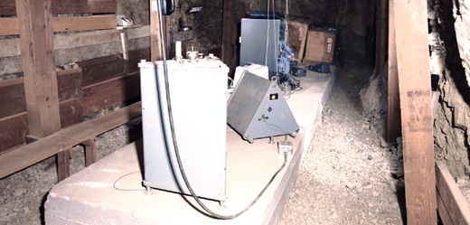

Leo Brady Seismic Network LBSN#
The Leo Brady Seismic Network (LBSN, originally the Sandia Seismic Network) was established in 1960 by Sandia National Laboratories to monitor underground nuclear tests at the Nevada National Security Site (formerly named the Nevada Test Site). The LBSN has been in various configurations throughout its existence, but it has generally been comprised of four to six stations at regional distances ( ∼ 150–400 km) from the NNSS with approximately evenly spaced azimuthal coverage. Up until the mid-1980s, the LBSN was entirely analog. Five stations are still in operation today (FDSN network code LB).
The network is currently operated by Sandia National Laboratories.
Stations#
Location |
Code |
Latitude |
Longitude |
Timespan |
Components |
|---|---|---|---|---|---|
Boulder City, Nevada |
BCN |
35.980833 |
-114.833889 |
1960-1963 |
|
Darwin, California |
DAC |
36.276944 |
-117.593611 |
1960-present |
|
Pioche, Nevada |
PIO |
38.1075 |
-117.621944 |
1960-1963, |
|
Silver Peak, Nevada |
SVP |
37.793889 |
-117.692222 |
1960-1962 |
|
Tonopah, Nevada |
TNP |
38.075 |
-117.2225 |
1962-present |
|
Nelson, Nevada |
NEL |
35.712222 |
-114.843333 |
1963-present |
|
St. George, Utah |
QVOL |
37.243056 |
-113.376667 |
1963-1981 |
|
Battle Mountain, Nevada |
BMN |
40.431389 |
-117.221667 |
1963-present |
|
Ely, Nevada |
ELY |
39.131667 |
-114.892222 |
1963-1973 |
|
Leeds, Utah |
LEE |
37.2425 |
-113.351389 |
1981-1998 |
|
Marysvale, Utah |
MSU |
38.503611 |
-112.212222 |
1998-present |
Instrumentation#
Geotech Benioff (models 1051 and 1101)
Recording Medium#
FM tape
Data Availability#
Tapes from 592 underground nuclear tests have been digitized. Original data tapes are stored at Kirtland Air Force Base in Albuquerque, New Mexico.
Software has been developed to assist in writing the digitized waveforms to miniSEED data files with associated RESP instrument response files and calibration parameters. Data is planned to be released in he upcoming years (Young and Abbott, 2020).
Contact#
For more information about this collection, please contact: < blank >
References#
Young, B. A., and R. E. Abbott (2020). Recovery and Calibration of Legacy Underground Nuclear Test Seismic Data from the Leo Brady Seismic Network, Seismol. Res. Lett. 91, 1488–1499, doi: 10.1785/0220190341.
Photo Credits: Benioff seismometers at Nelson, Nevada (Young and Abbott, 2020)